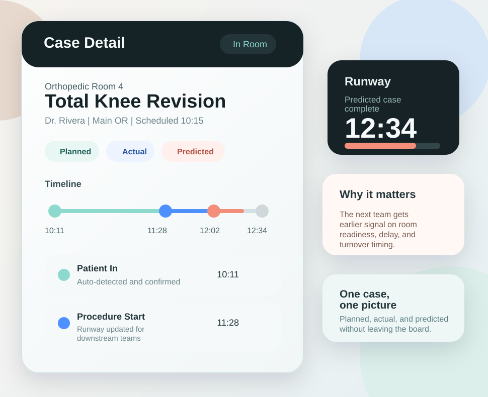
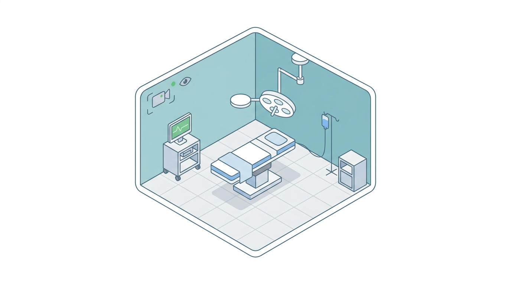

Day-of execution board
A single operating view that shows plan, actual, and best prediction across multiple rooms. This is the core experience for charge desks, command centers, and perioperative operations teams.
PeriSmart is designed to give perioperative teams a live view of room progression, predicted timing, event-driven coordination, and the analysis needed to improve future performance.

A single operating view that shows plan, actual, and best prediction across multiple rooms. This is the core experience for charge desks, command centers, and perioperative operations teams.
Operational alerts and OR activity signals can be routed by role, room, area, specialty, or surgeon so people hear about the moments that matter sooner.

PeriSmart pairs room-state awareness with de-identified camera visibility to reduce unnecessary room checks and give staff a more trusted operational picture.

Historical execution data can be used to understand turnover, idle time, block time utilization, room utilization, on-time starts, schedule accuracy, and overtime pressure.
PeriSmart brings in schedule data from existing systems. It does not try to replace mature hospital scheduling workflows.
| PeriSmart does | PeriSmart does not |
|---|---|
| Provide real-time OR execution visibility with room progression and timing updates. | Replace full OR scheduling systems already used by the hospital. |
| Coordinate day-of operations using alerts, runway, and actual milestones. | Act as a surgical safety checklist platform or education library. |
| Support analytics on operational performance like turnover, block time utilization, and room utilization. | Claim clinical decision support or intraoperative guidance. |
Less time walking the halls, calling rooms, or reconciling fragmented sources of truth.
More warning around delay, case end, room-ready timing, and downstream transitions.
Planned versus actual progression becomes easier to see and easier to manage.
Understand how allocated block time and room capacity are actually being used, helping teams identify underutilized windows and optimize scheduling decisions.
Operational data becomes more useful for understanding throughput and identifying bottlenecks.
The public site should make the operating model easy to understand, then hand the conversation off to a direct product discussion.